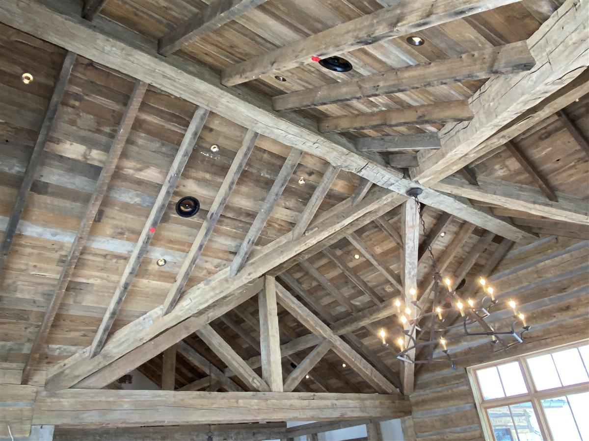

People use "timber frame" and "log home" interchangeably, but structurally they're opposites. We build both across the Sun Valley area — big timber framing and custom log homes — and choosing between them shapes everything from the look of your great room to your maintenance calendar for the next thirty years.

The structural difference
A timber frame home is a skeleton: heavy posts, beams, and trusses joined into a frame that carries the structure. The walls between the timbers are conventional — insulated, sheathed, finished however you like. The timber is the architecture you see inside: exposed trusses, big spans, vaulted ceilings.
A log home has no skeleton — the walls themselves are the structure. Stacked logs carry the loads, and the wood is both the exterior siding and the interior finish. It's the most honest form of wood construction there is: what you see is what's holding the roof up.
How they live differently
Look and feel
Timber frame reads as craftsmanship in the ceiling — dramatic trusses over otherwise conventional (often bright, modern) walls. Log construction wraps you in wood on every surface. Neither is better; they're different answers to what you want a mountain home to feel like.
Insulation and walls
Timber frame walls are built like any modern high-performance wall, so hitting aggressive energy targets is straightforward. Log walls insulate through the mass of the wood itself, which performs well when the logs are properly sealed — which brings us to maintenance.
Maintenance
This is the biggest practical difference. Log walls are exterior wood, and they need what exterior wood needs in Idaho: stain and chinking maintenance on a regular cycle. A timber frame home's exterior is whatever siding you chose, with the timbers protected inside. If low exterior maintenance matters to you, that weighs toward timber frame; if the solid-log character is why you're building, the maintenance is simply part of ownership — and manageable with a good cadence.
Settling and movement
Log walls settle as the wood seasons — good log builders engineer for it around windows, doors, and plumbing. Timber frames move far less; the joinery locks the frame, and the conventional walls behave like any custom home.
The hybrid answer
Plenty of the homes we build in the valley are both: timber-framed great rooms and entries for the drama of exposed trusses, with log or log-sided wings for the character. If you're torn between the two looks, a hybrid is usually the honest answer — you put each construction type where it does what it's best at.
Which one is right for your build?
It comes down to three questions: what do you want to see when you stand in the great room, how much exterior maintenance are you signing up for, and what does your site and budget favor? Those are conversations worth having with a builder who does both and doesn't need to steer you toward the one they know. That's us: 208-897-8100.